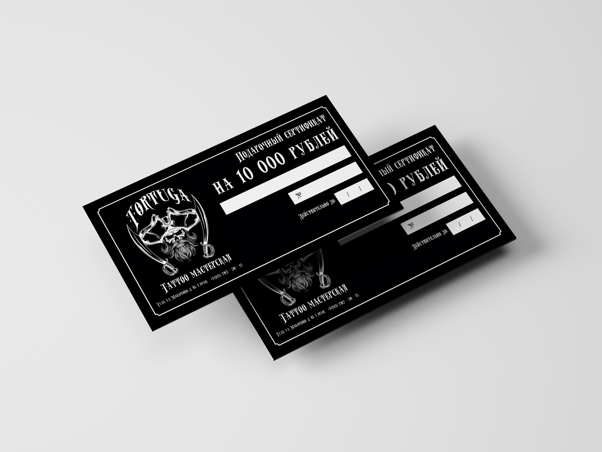
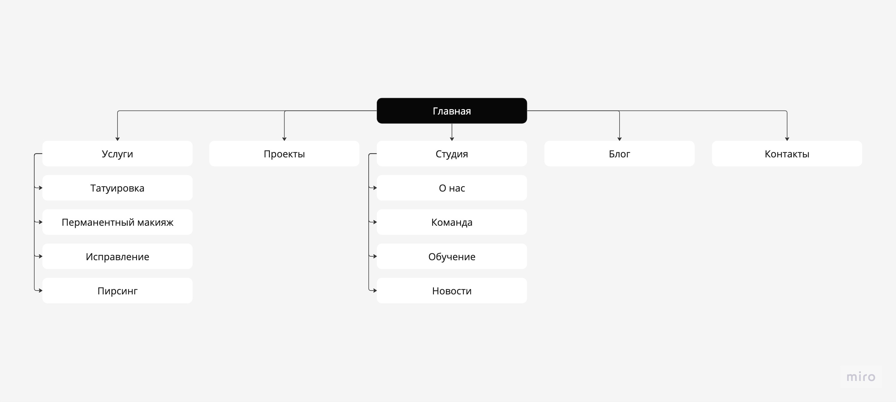
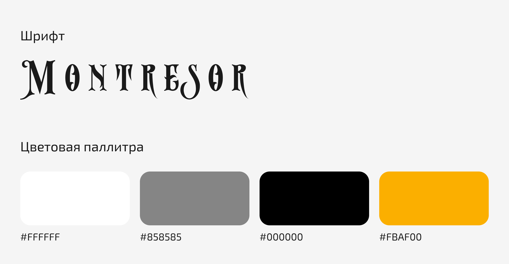

Процесс дизайна и разработки
Процесс проектирования сайта для "Tortuga Tattoo Workshop" был тщательным и креативным процессом, объединяющим функциональные и эстетические аспекты. Вот несколько этапов этого процесса:
Создание бренда: Процесс создания бренда для "Tortuga Tattoo Workshop" начался с глубокого исследования и понимания уникальной идентичности и ценностей. Я стремился не просто разработать сайт, но и создать виртуальное пространство, которое бы идеально отражало атомсферу тату мастерской и становилось незаменимой частью ее бренда.

Проектирование Информационной Архитектуры: Я определил структуру сайта, разработав четкий план размещения информации. Главной задачей было обеспечить удобство использования и быстрый доступ к ключевой информации, такой как портфолио мастеров и контактные данные.

Дизайн и интерфейс: Следующим этапом было создание уникального дизайна. Я стремился передать индивидуальность Тортуги через цветовую палитру, шрифты и визуальные элементы. Важным было также обеспечить адаптивность сайта для разных устройств.

Разработка сайта и интеграция функционала: Процесс начался с ручной верстки сайта с помощью основных языков веб-разработки. В данном случае использовались следующие языки: HTML, CSS, JavaScript и PHP.

Я также внедрил функциональность, необходимую для удовлетворения потребностей клиентов. Это включало в себя создание галереи татуировок, форм онлайн-записи на услуги мастерской и консультацию, форм обратной связи и информацию о мастерах.
Тестирование и Отладка: Процесс прошел через несколько раундов тестирования, чтобы убедиться в стабильности и правильной работе сайта. Я уделял особое внимание как функциональным, так и дизайнерским аспектам.
Запуск и развитие: После успешного завершения тестирования сайт был запущен. Однако проект не закончился на этом этапе. Я продолжаю сотрудничество с "Tortuga Tattoo Workshop" для поддержания и развития сайта, а также для дальнейшего совершенствования онлайн-присутствия.
Этот процесс проектирования сайта был воплощением тщательно продуманных решений, внимания к деталям и стремления к созданию онлайн-пространства, которое идеально отражает уникальность и страсть "Tortuga Tattoo Workshop" к искусству татуировки.